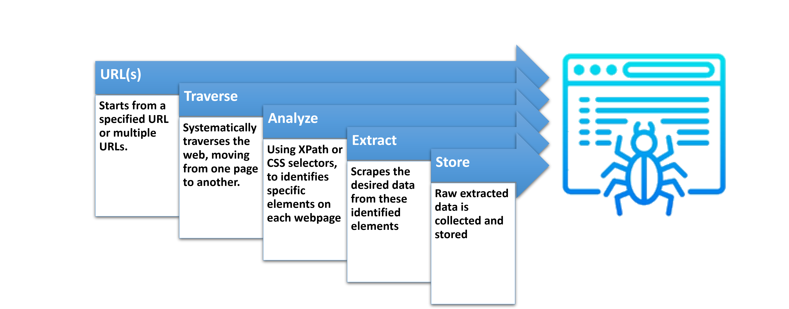
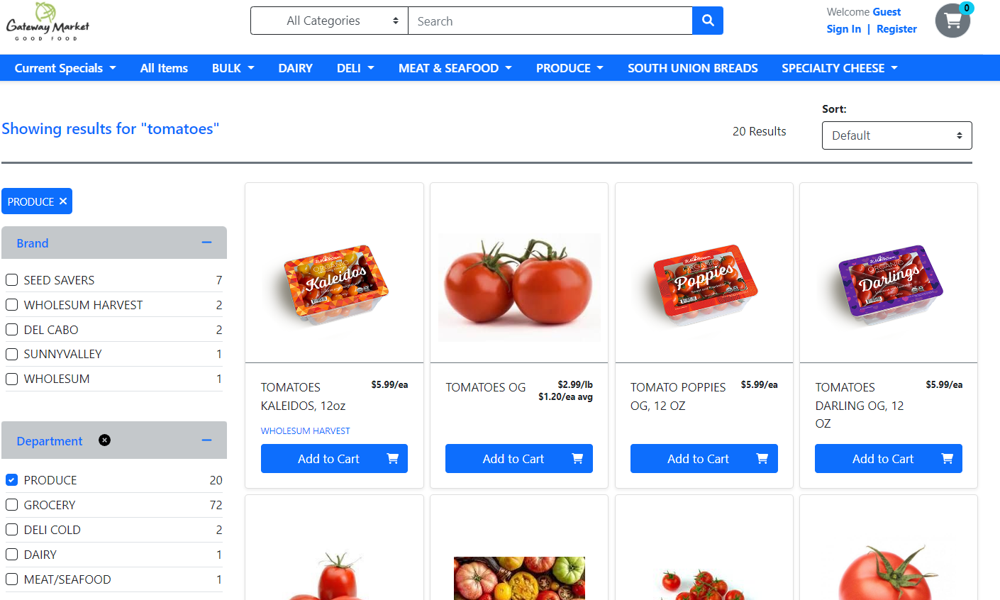
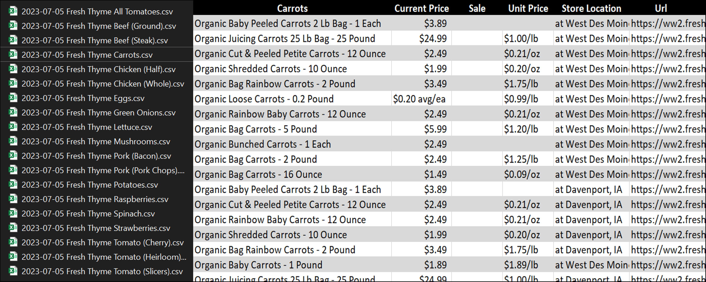
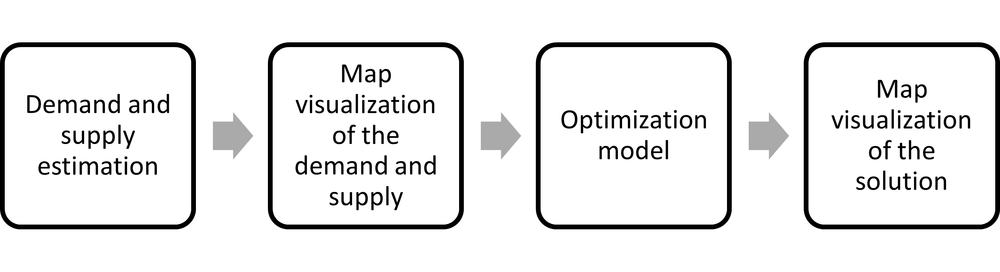

Meet our team
.png)
About the Project
The project aims to address the need for localized and up-to-date demand forecasting information for Iowa’s local food producers. For this, we choose three products, eggs, Bacon and Tomatoes as they are non processed food items that are produced locally.
Our project is focused on analyzing and understanding the pricing dynamics of eggs and bacon across various counties. We aim to collect comprehensive data on these products and create a graph/map that visually represents their prices. Additionally, we will develop web-scraping spiders to automate data collection for a comprehensive product database. Finally, we will optimize the flow of crops, from supply to demand, to maximize overall profit. By combining data analysis, web scraping, and optimization techniques, our project aims to provide valuable insights and tools for decision-making in the agricultural market.

What we plan to achieve:
Our primary goal is to create a comprehensive map showcasing the prices of eggs and bacon across different counties. This map will enable us to identify trends, patterns, and customer preferences in pricing, helping businesses make informed decisions.
We also aim to develop efficient web-scraping spiders that automate data collection, saving time and improving the accuracy of the collected information.
Furthermore, we will showcase the effectiveness of these spiders with a specific crop example, demonstrating their ability to extract relevant data.
Finally, we will optimize the crop flow to maximize overall profit, considering factors such as demand estimation, supply dynamics, and transportation costs.
Ultimately, we aim to provide insights, tools, and strategies that enhance decision-making and profitability within the local food market.
How we plan to achieve:
To achieve our objectives,
we will employ a multi-faceted approach that combines data analysis, web scraping, and optimization techniques. We will collect comprehensive pricing data for eggs and bacon across different counties, employing data mining and analysis to identify trends, patterns, and customer preferences. The collected data will be visualized in a comprehensive map that highlights key insights.
We will develop web-scraping spiders specifically tailored to gather data from selected websites. These spiders will automate the data collection process, ensuring a continuous and efficient flow of information for our comprehensive product database.
Through a specific crop example, we will showcase the capabilities of our web-scraping spiders, demonstrating their effectiveness in retrieving data for various agricultural products. This demonstration will highlight their value in supporting data-driven decision-making processes.
To optimize the crop flow, we will employ demand estimation methodologies, analyze supply dynamics, consider transportation costs, and apply optimization techniques. By considering these factors, we can identify the most profitable routes and strategies for crop distribution, resulting in increased profitability and improved resource allocation.
Why it is important:
This project holds immense importance for several reasons.
Firstly, understanding the pricing dynamics of eggs and bacon allows businesses to adapt their strategies, optimize pricing, and remain competitive. The comprehensive map will provide valuable insights into market trends, customer preferences, and suitable selling locations, empowering businesses to make informed decisions.
Automating data collection through web-scraping spiders is crucial for timely and accurate information gathering. It saves time, improves data accuracy, and facilitates the creation of a comprehensive product database. This enables businesses to stay up-to-date with market trends and make informed decisions.
The optimization of crop flow is vital for maximizing profitability and resource allocation. By analyzing demand and supply dynamics, transportation costs, and market trends, businesses can identify the most profitable routes and strategies for crop distribution. This optimization minimizes waste, improves efficiency, and contributes to sustainable agricultural practices.
Data Analysis
Through this analysis, we aim to uncover valuable insights, identify trends, patterns, and customer preferences, and make informed decisions to enhance profitability in the local food market. Let’s explore our data analysis approach and the exciting outcomes it will provide.
First let’s understand how data analysis works:

Research questions
Pricing Analysis:
- How do the prices of different bacon brands vary?
- Is there a significant price difference between local and non-local bacon products?
- Are there any pricing trends or patterns across different stores or locations?
Weight Analysis:
- What is the average weight deviation of bacon products across different brands?
- Do certain brands consistently provide more accurate weight measurements than others?
- Is there any correlation between price and weight of bacon products?
Brand Popularity:
Which bacon brands are more popular based on the number of entries in the dataset?
Are there any associations between brand popularity and factors like price or location?
Are there any regional preferences or differences in brand popularity?
Geographic Analysis:
- How are bacon products distributed across different states, cities, and zip codes?
- Are there any regional variations in pricing, availability, or brand preferences?
- Can geographic data be used to identify potential market opportunities or target specific regions for marketing efforts?
Store Analysis:
- Which stores offer the largest variety of bacon products based on the dataset?
- Are there any stores that consistently provide competitive prices for bacon products?
- Are there any associations between store reputation, pricing, and availability of bacon products?
~~~~~~~~~~~~~~~~~~~~~~~~~~~~~~
Web Scraping: Automating Data Collection
Due to the success of last years project they were able to gather data of products using web scrapers. For this year we were given a similar task with different products.
This is were we ran into a big problem. Due to the fact that an entire year as past. The website that they were scraping went under some changes. Meaning the majority of there work and process of how they manage to gather the data had became obsolete.
Not only that but after detailed inspection we notice that there process was unintentionally flawed. Meaning the scraper they built could not function unless it was under very specific circumstances.
To ensure the success of our project. Gathering a substantial amount of data is crucial. Performing this task manually is not only time-consuming but also prone to errors and incredibly tedious.
To overcome these challenges, we have developed web crawlers or Spiders to automate the process. This automation not only saves time but also guarantees accurate and up-to-date data collection.
To put it simply as possible a Spider (web crawler) is a program(s) or script(s) specifically designed to automate website navigation and extract the desired data.
These Spiders are designed not only achieve what was done before but to surpass the previous years work by a long shot.
General Spider Procedure

Some examples of what the spider would be able to see are is esentally anything on the web page. So for example Text content, Images, Links, etc. Their vision would look something like this:
<tag-name attribute-name= “attribute info”> … what we want (Element contexts) … </tag-name>
Our Spider Procedure

NOTE: Giving a little more information about how your spider is different. Why is there a need to design multiple spiders for instance. You can also tie this into how there are static and dynamic websites which require you to have different tools for the job.
What the spiders were able to achieve



Future Improvements
- General optimizations
- Implementing parallel processing: Splits execution of code and running them simultaneously
- More spiders for additional websites
- Exploration of different web scraping methods
These Spiders are more than capable to expand to other products!

~~~~~~~~~~~~~~~~~~~~~~~~~~~~~~
SWATI PART HERE
~~~~~~~~~~~~~~~~~~~~~~~~~~~~~~
Optimization of the crop flow
The price of the product varies across different stores and cities
Local food farms have opportunities to sell their product in high-priced areas
Analyze crop distribution strategies for local food farms to maximize profit
Objective: Maximizing revenue through crop sales while considering transportation costs
Ignored production costs as they have no influence on crop distribution
We have chosen tomatoes as an example to illustrate our approach. Our analysis begins with estimating the demand and supply of tomatoes in various counties across Iowa. We will then focus on optimizing the distribution of tomato crops over an 8-week timeline, specifically from late July to mid-September.

Demand and supply estimation

Our estimation of the supply-demand ratio for tomatoes in Iowa is 0.06658, which closely aligns with the supply-demand ratio of 0.0380 mentioned in the IMPLAN model for Iowa vegetables and melons (not specifically tomatoes). This indicates that our estimate is a reasonable approximation.
For a detailed explanation of how we estimated the demand and supply, please refer to HERE.
Map visualization of demand and supply
Why a combined strategy is necessary?
Let’s imagine a county acting as a single farmer. In order to maximize its profit, the farmer will aim to sell its product to the county that offers the highest price, while also taking transportation costs into account.
In this scenario, all the farmers (counties) will try to sell their tomatoes to a single county that offers the highest price.
As a result, there would be an influx of products, potentially leading to an oversupply where the demand may not match. Consequently, the price could decrease, while certain counties might face a shortage of tomatoes.
Therefore, it becomes crucial for the farmers (counties) to adopt a collaborative strategy.
Demonstration of the optimization model
To provide a demonstration, we select a small subset of counties (24 out of a total of 99 counties) where the gap between supply and demand is relatively modest.
In these selected counties, we simulate the prices of tomatoes using a normal distribution with a mean of 2.25 and a standard deviation of 0.25.
For our analysis, we took into account the Ford F-350 truck with a carrying capacity of 7640 lb and a fuel efficiency of 15 mpg. We assumed that the truck would travel in a straight line (Euclidean distance) from the origin to the destination. Additionally, we considered a gas price of $3.5/gallon.
Solution of the distribution problem
Profit retrained in collaborative strategy compared to operating individually
Limitations
- Consideration of Euclidean distance instead of real-world road distance
- Consideration of $/Metric Ton/Mile instead of $/Truck-load/Mile
Future Work
- Taking care of the limitations mentioned above.
- Focus on the profit retained section during optimization.
- Integration of where to plant crops to this model.
~~~~~~~~~~~~
CONCLUSION